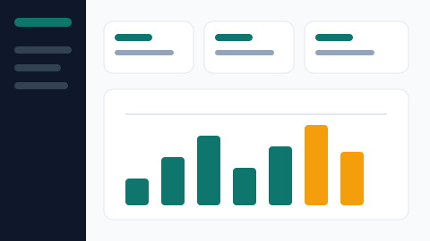
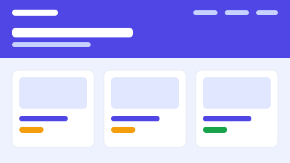

Unggulan

Dashboard SIAKAD
Magang · 2025 · Bootstrap 5, CSS Grid
Halaman ringkasan akademik untuk staf program studi.
Satu halaman, semua token dan komponen. Tiga pembaca: desainer, penulis kode, dan penjaga merek. Halaman ini tidak masuk navigasi utama.
Nama mengikuti peran, bukan warna. Ganti nilainya, nama tetap masuk akal.
--clr-primary
#0F766E
--clr-primary-dark
#115E59
--clr-accent
#F59E0B
--clr-dark
#0F172A
--clr-success
#15803D
--clr-danger
#DC2626
--clr-body
#334155
--clr-border
#E2E8F0
--clr-bg
#F8FAFC
--clr-surface
#FFFFFF
Kontras --clr-primary di atas
putih 5,3:1 — lolos AA untuk teks kecil. Amber hanya untuk badge, teksnya memakai
--clr-dark.
Display · 48/36 px
h1 memakai
clamp(2.25rem, 5vw, 3rem)
Heading 4 · 20 px
Paragraf isi: Inter 16 px, line-height 1,6. Dipakai untuk semua teks panjang.
Teks kecil · 14 px untuk keterangan dan meta.
Semua jarak adalah kelipatan --space-unit.
8 px · 1×16 px · 2×24 px · 3×32 px · 4×48 px · 6×56 px · 7×| Jenis | Normal | Hover | Nonaktif |
|---|---|---|---|
Utama .btn-cv | teal, teks putih | teal gelap | redup |
Outline .btn-outline-cv | garis teal | latar teal | garis tipis |
Satu tindakan paling bernilai per layar memakai varian utama; sisanya outline.
Warna bukan satu-satunya penyampai makna, jadi setiap badge selalu membawa teks.

Magang · 2025 · Bootstrap 5, CSS Grid
Halaman ringkasan akademik untuk staf program studi.

Proyek mata kuliah · 2025
Toko online UMKM yang dibangun bertahap sepanjang semester.
--clr-primary di blok
:root, bukan warna di tiap komponen.Panel kedua memakai kelas
collapsed dan tidak dibuka tanpa JavaScript.

Hanya item dengan kelas
active yang tampak; panah dan indikator butuh JavaScript.
Format surel sudah benar.
Alamat surel belum lengkap.
Status validasi di sini statis: warnanya
datang dari kelas is-valid dan is-invalid, bukan dari
pemeriksaan JavaScript.
Ikon dekoratif diberi
aria-hidden="true" karena ada teks pendamping.
Ikon berdiri sendiri wajib punya aria-label.
:root.outline tanpa menggantinya.